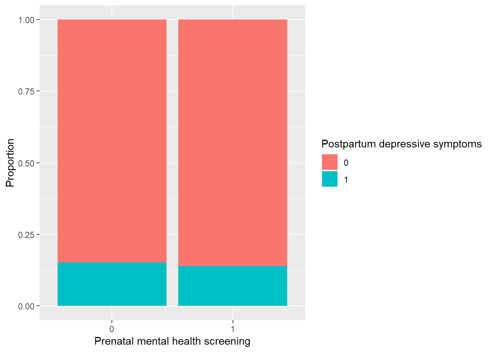

# A tibble: 2 × 7
term estimate std.error statistic p.value conf.low conf.high
<chr> <dbl> <dbl> <dbl> <dbl> <dbl> <dbl>
1 (Intercept) 0.178 0.0133 -130. 0 0.173 0.182
2 screened1 0.905 0.0149 -6.67 2.54e-11 0.879 0.932Prenatal Mental Health Screening and Postpartum Depressive Symptoms
\(\dagger\) Disclaimer: The opinions expressed in this article are the author’s own and don’t reflect their employer.
1 Summary/Abstract
This project examines whether prenatal mental health screening is associated with postpartum depressive symptoms using data from the Pregnancy Risk Assessment Monitoring System (PRAMS) Phase 8. The analysis focuses on self-reported experiences during prenatal care and postpartum mental health outcomes to assess the feasibility of identifying meaningful patterns in population-based surveillance data.
2 Introduction
Postpartum depression is a common and serious public health concern that affects maternal well-being, family functioning, and infant outcomes. Clinical guidelines increasingly recommend routine screening for depression and anxiety during prenatal care; however, the extent to which such screening is associated with postpartum mental health outcomes in real-world settings remains unclear.
Using data from the Pregnancy Risk Assessment Monitoring System (PRAMS) Phase 8, this study examines whether individuals who report being asked about depression or anxiety during prenatal care are less likely to report postpartum depressive symptoms. By leveraging a large, population-based dataset, this project aims to explore whether prenatal screening practices may be associated with improved postpartum mental health outcomes.
2.1 General Background Information
Prenatal and postpartum mental health conditions are increasingly recognized as critical components of maternal health, with implications for both maternal and infant outcomes. Understanding whether routine prenatal screening translates into improved postpartum mental health can inform clinical practice and policy.
2.2 Description of data and data source
The data for this study come from the Pregnancy Risk Assessment Monitoring System (PRAMS) Phase 8, a population-based surveillance system conducted by the Centers for Disease Control and Prevention in collaboration with state health departments. PRAMS collects self-reported survey data from individuals who recently had a live birth and links these responses to selected birth certificate variables.
PRAMS Phase 8 includes several hundred variables capturing maternal demographics, pre-pregnancy health conditions, prenatal care experiences, health behaviors, insurance coverage, mental health indicators, and postpartum outcomes. The dataset contains a mix of categorical and numeric variables and reflects real-world survey complexity, including skip patterns and missing data.
Across participating states, PRAMS Phase 8 includes tens of thousands of respondents, providing sufficient sample size and variable richness to support exploratory analysis, multivariable modeling, and predictive approaches covered later in the course.
For this project, variables related to prenatal mental health screening, pre-pregnancy mental health history, postpartum depressive symptoms, and sociodemographic characteristics will be used. Variable definitions and coding schemes are documented in the PRAMS Phase 8 codebook.
2.3 Questions/Hypotheses to be addressed
The primary research question for this study is:
Are individuals who report being asked about depression or anxiety during prenatal care less likely to report postpartum depressive symptoms?
The primary outcome of interest is self-reported postpartum depressive symptoms, measured using PRAMS survey items assessing feelings of depression and loss of interest since birth. The primary predictors of interest include indicators of prenatal mental health screening, such as whether a healthcare provider asked about depression or anxiety during prenatal visits.
Additional covariates will include pre-pregnancy mental health history, insurance coverage, income, education, maternal age, and race or ethnicity.
3 Methods
3.1 Use of Computational Assistance
Artificial intelligence tool (ChatGPT) was used to assist with code troubleshooting. All code and analytical decisions were reviewed, modified as needed, and implemented by the author. The author takes full responsibility for the accuracy, interpretation, and reproducibility of all analyses and results.
3.2 Analysis Approach
At this stage of the project, the analysis plan includes descriptive summaries of key variables and exploratory comparisons between individuals who did and did not report prenatal mental health screening. These exploratory analyses will be used to assess data quality, missingness, and preliminary patterns in the data.
Later stages of the project will involve regression-based and machine learning approaches covered in the course to model associations between prenatal screening and postpartum mental health outcomes while accounting for relevant covariates. The richness of PRAMS survey content and linked birth data makes this analysis feasible within the scope of a semester-long project.
3.3 Data Source
Data were obtained from the Pregnancy Risk Assessment Monitoring System (PRAMS), a population-based surveillance system conducted by the Centers for Disease Control and Prevention in collaboration with state health departments. PRAMS collects self-reported information on maternal experiences before, during, and shortly after pregnancy.
3.4 Study Population
The analytic sample included respondents with non-missing values for the primary exposure (prenatal depression screening) and outcome (postpartum depressive symptoms).
# A tibble: 1 × 1
n_total
<int>
1 237392# A tibble: 1 × 1
n_analysis
<int>
1 2332133.5 Measures
The primary exposure was self-reported prenatal mental health screening (screened), indicating whether a provider asked about depression or anxiety during prenatal care. The primary outcome was postpartum depressive symptoms (pp_depress_bin), coded as a binary indicator. Both variables were analyzed as categorical or binary measures.
Key covariates included prior depression during pregnancy (BPG_DEPRS8) and maternal education (MAT_ED).
3.6 Statistical Approach
Exploratory analyses included descriptive statistics, cross-tabulations, and graphical comparisons of postpartum depressive symptoms by screening status. All analyses were conducted in R.
3.7 Results
Results sections will be developed after data cleaning and exploratory analysis are completed. Descriptive summaries, tables, and figures will be presented to characterize the study population and explore relationships between prenatal screening and postpartum depressive symptoms.
The analytic sample included approximately 237,000 respondents after excluding missing outcome and exposure values. Overall, 81% of respondents reported being screened for depression during prenatal care, and 14% reported postpartum depressive symptoms.
| term | estimate | std.error | statistic | p.value | conf.low | conf.high |
|---|---|---|---|---|---|---|
| (Intercept) | 0.154 | 0.040 | -46.571 | 0.000 | 0.143 | 0.167 |
| screened1 | 0.759 | 0.015 | -17.863 | 0.000 | 0.737 | 0.783 |
| BPG_DEPRS82 | 3.376 | 0.014 | 89.451 | 0.000 | 3.287 | 3.467 |
| MAT_ED2 | 1.360 | 0.043 | 7.235 | 0.000 | 1.252 | 1.479 |
| MAT_ED3 | 1.289 | 0.040 | 6.359 | 0.000 | 1.193 | 1.395 |
| MAT_ED4 | 1.088 | 0.040 | 2.121 | 0.034 | 1.007 | 1.177 |
| MAT_ED5 | 0.694 | 0.040 | -9.134 | 0.000 | 0.642 | 0.751 |
3.7.1 Exploratory Analysis
We first examined the distribution of prenatal mental health screening and postpartum depressive symptoms in the analytic sample. We also explored how postpartum depressive symptoms varied by screening status, prior depression during pregnancy, and maternal education.
Preliminary descriptive results suggested that postpartum depressive symptoms were more common among respondents who did not report receiving prenatal mental health screening. Higher rates of postpartum depressive symptoms were also observed among respondents who reported depression during pregnancy. Differences across maternal education groups were also examined to explore potential patterns in the data.
These exploratory analyses help identify initial patterns in the dataset and guide the selection of variables for later modeling and statistical analysis.
| screened | pp_depress_bin | n | percent |
|---|---|---|---|
| 0 | 0 | 38048 | 84.8 |
| 0 | 1 | 6805 | 15.2 |
| 1 | 0 | 165745 | 86.1 |
| 1 | 1 | 26794 | 13.9 |
In exploratory analyses, postpartum depressive symptoms were more common among women who did not report receiving prenatal depression screening compared to those who were screened. Prior depression during pregnancy was strongly associated with postpartum depressive symptoms, suggesting that mental health history is an important confounder to consider in adjusted analyses. Differences in postpartum depressive symptoms were also observed across education levels.

| term | estimate | std.error | statistic | p.value | conf.low | conf.high |
|---|---|---|---|---|---|---|
| (Intercept) | 0.154 | 0.040 | -46.571 | 0.000 | 0.143 | 0.167 |
| screened1 | 0.759 | 0.015 | -17.863 | 0.000 | 0.737 | 0.783 |
| BPG_DEPRS82 | 3.376 | 0.014 | 89.451 | 0.000 | 3.287 | 3.467 |
| MAT_ED2 | 1.360 | 0.043 | 7.235 | 0.000 | 1.252 | 1.479 |
| MAT_ED3 | 1.289 | 0.040 | 6.359 | 0.000 | 1.193 | 1.395 |
| MAT_ED4 | 1.088 | 0.040 | 2.121 | 0.034 | 1.007 | 1.177 |
| MAT_ED5 | 0.694 | 0.040 | -9.134 | 0.000 | 0.642 | 0.751 |
3.8 Discussion
The discussion section will interpret findings in the context of existing literature, address strengths and limitations of the analysis, and consider implications for prenatal care practices and maternal mental health policy.
3.9 References
References will be added in later stages of the project using a BibTeX file and cited throughout the manuscript.